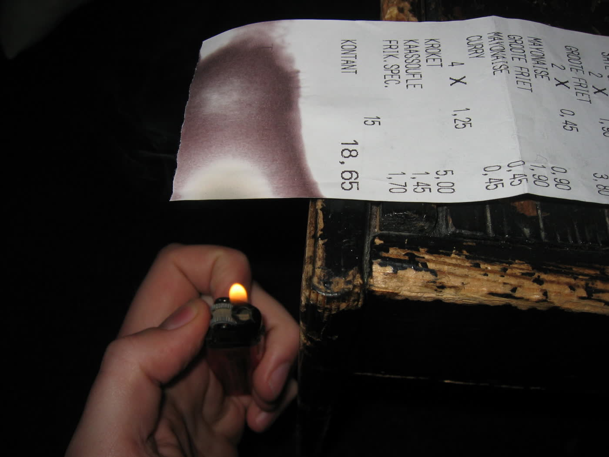
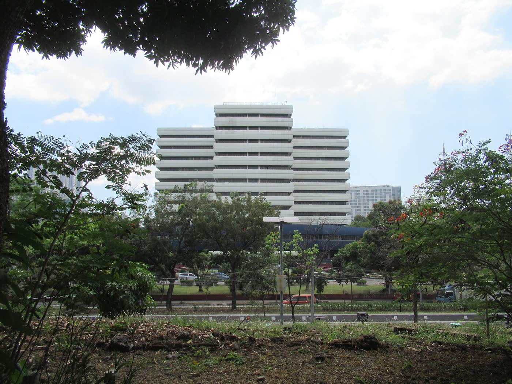
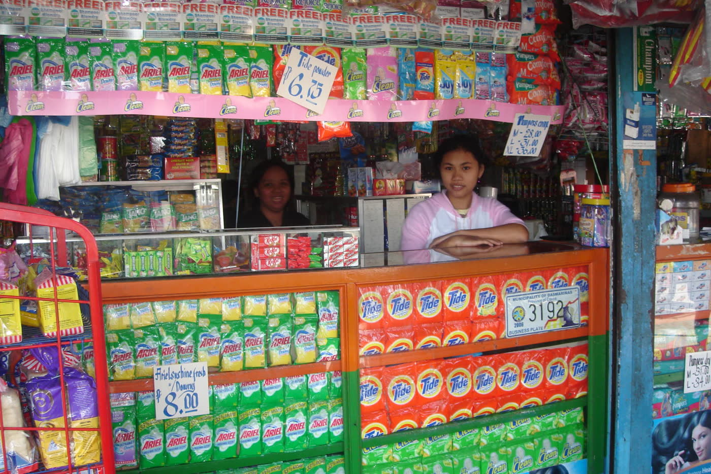
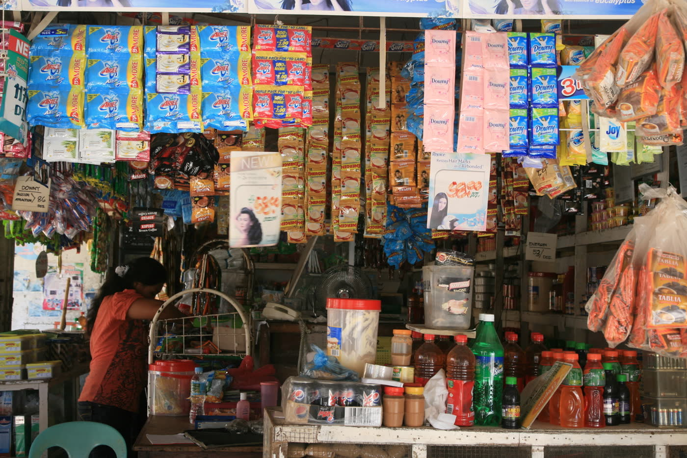

A copy before the ink fades
Thermal receipts can go blank within months. The photo is saved with the record the moment you snap it, so the proof stays readable.

Picture a receipt and AyosPapel reads the TIN, store, and VAT for you. When the quarter ends, your Summary List of Sales and Purchases is already done.
First, picture the receipt with the phone you already have.
Then check what it read and fix anything the ink lost.
After that, it's filed under the right business, month, and quarter. Totals add up as you go.
Finally, download the SLSP when the quarter closes.
Hindi na kailangang i-encode isa-isa ang bawat resibo.
Pick a receipt. Watch it get read, check it, then save it to the quarter. The SLSP below fills in as you go.
Pick a receipt above to start.
| Type | TIN | Registered name | Taxable | VAT | Gross |
|---|---|---|---|---|---|
| No receipts saved yet. Save one above and it lands here. | |||||
Thermal receipts can go blank within months. The photo is saved with the record the moment you snap it, so the proof stays readable.

Sales, purchases, and VAT per month and per quarter, already added up. No more adding columns by hand the night before.
Q4 2026, Sunrise Mini Mart
AyosPapel reminds you before quarterly BIR requirements are due, so nothing gets filed late because someone forgot.

Handling more than one business? Each has its own TIN, receipts, and SLSP. They never mix, and you switch between them in one tap.

Reading receipts is part of the system. You will never see a counter of scans left or be asked to top up mid-quarter.

Each envelope of receipts gets a reference number and a printed acknowledgement.
The photos attach to the same batch, filed by business and month.
Cabinet B, drawer 2, held by Joy. Every move is recorded, so it's never a guess.
Who received the originals, how, and when, with a release acknowledgement.
No. It prepares the SLSP and the totals so they're ready. You still submit through the BIR's own channels, the way you do now.
It shows which fields it couldn't read so you type only those. The photo is kept either way.
No. There are no tokens or credits. Scanning is part of the system, not a separate charge.
Yes, with their own invite-only accounts. You decide which businesses each person can see.
Records and photos are never public and open only after signing in, and each business is kept apart. To read a receipt, its photo is sent to an AI reading service, then stored privately in AyosPapel.
No. It handles receipts, records, and the SLSP, and works alongside whatever you already use for the books.
One business, one quarter. If it doesn't save time, you've lost nothing.